Высокочастотный генератор (частота 100 МГц,
сопротивление
нагрузки 50 Ом, выходное напряжение 10 В, мощность 2 Вт)
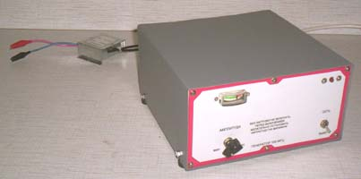
Генератор разработан для проведения технологических опытов. Для предотвращения помех теле- и радиоприему все узлы генератора собраны в металлическом корпусе, выполняющем роль экрана, а опыты проводились в экранированных боксах. Блок-схема генератора показана на рис. 1.
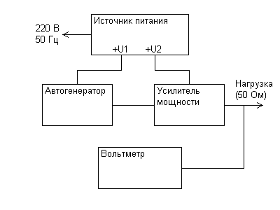
Рис. 1. Блок-схема высокочастотного генератора.
Автогенератор частотой 100 МГц на элементах LC (рис. 2, 3), выполняющий роль задающего генератора для усилителя мощности, собран на печатной плате из двухстороннего фольгированного стеклотекстолита методом поверхностного монтажа. С помощью потенциометра R1 устанавливается рабочая точка транзистора VT1 (КТ610А [3]). Частота автогенератора регулируется в небольших пределах конденсатором С2. Выходная мощность автогенератора примерно 0.5 Вт. Согласование с нагрузкой, сопротивление которой приблизительно равно 50 Ом, производится подстройкой конденсаторов C7, C9. Печатная плата автогенератора помещена в корпус из оцинкованного железа, выполняющий роль экрана и теплоотвода транзистора VT1.
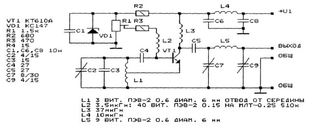
Рис. 2. Электрическая принципиальная схема автогенератора частотой 100 МГц.
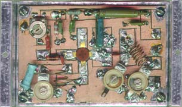
Рис. 3. Печатная плата автогенератора. Размеры печатной платы 80 х 50 мм2.
На рис. 4, 5 показана схема и печатная плата усилителя мощности с коэффициентом усиления по мощности ~6. Усилитель на транзисторе VT1 (КТ907А [2]) построен по схеме без смещения рабочей точки транзистора. Согласование с автогенератором осуществляется подстройкой конденсаторов C1, C2. Выходная цепь C5L5C7 служит для согласования с нагрузкой сопротивлением 50 Ом. Усилитель собран методом поверхностного монтажа на печатной плате из двухстороннего фольгированного стеклотекстолита. Печатная плата усилителя помещена в корпус из оцинкованного железа, выполняющий роль экрана. К корпусу дополнительно крепится теплоотвод транзистора VT1.
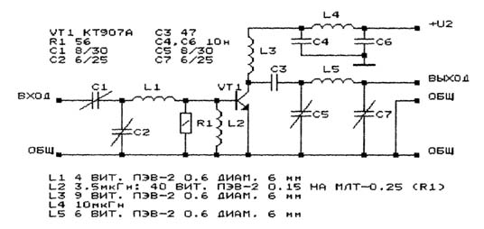
Рис. 4. Электрическая принципиальная схема усилителя мощности на частоту 100 МГц.
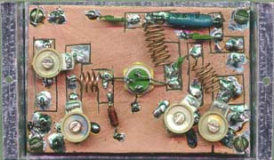
Рис. 5. Печатная плата усилителя мощности. Размеры печатной платы 80 х 50 мм2.
Для подключения внешней нагрузки и вольтметра для контроля амплитуды выходного напряжения (рис. 7) используется блок, схема и печатная плата которого показаны на рис. 6.
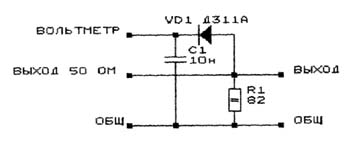 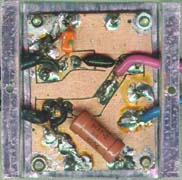
Рис. 6. Схема электрическая принципиальная и внешний вид печатной платы блока подключения нагрузки. Размеры печатной платы 40 х 50 мм2.
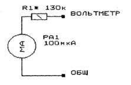
Рис. 7. Схема электрическая принципиальная вольтметра для контроля амплитуды выходного напряжения.
Источник питания генератора (рис. 8, 9) собран по схеме сетевой фильтр - понижающий трансформатор - мостовой выпрямитель - стабилизатор напряжения. С помощью резистора R1 "Амплитуда" можно регулировать напряжение питания +U2 усилителя мощности и, соответственно, выходное напряжение и выходную мощность генератора.
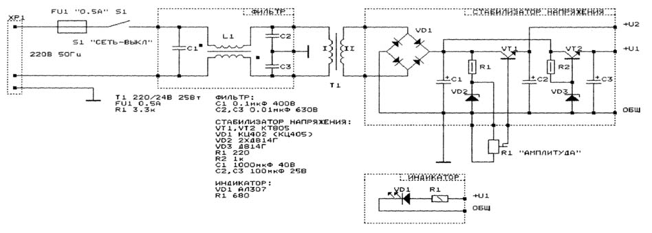
Рис. 8. Схема электрическая принципиальная источника питания.
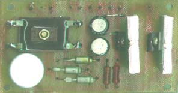 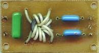
Рис. 9. Внешний вид печатных плат стабилизатора напряжения (размеры 90 х 55 мм2) и сетевого фильтра (размеры 60 х 30 мм2).
Высокочастотный генератор собран в корпусе размером 200 х 100 х 200 мм3. Масса прибора не более 2 кг. Внешний и внутренний вид генератора показан на рис. 10 - 12.
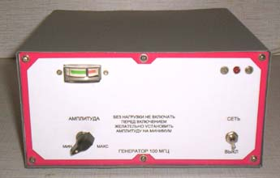
Рис. 10. Высокочастотный генератор 100 МГц: вид спереди.
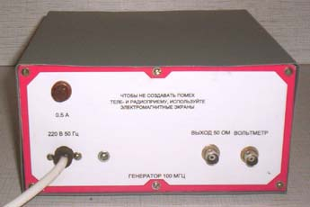
Рис. 11. Высокочастотный генератор 100 МГц: вид сзади.
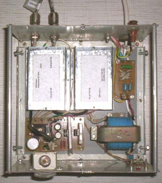
Рис. 12. Высокочастотный генератор 100 МГц: вид изнутри.
Ссылки:
13.12.2006
28.09.2019
Альтернативные источники
энергии
Компьютеры и
Интернет
Магнитные поля
Механотронные системы
Перспективные
разработки
Электроника и технология